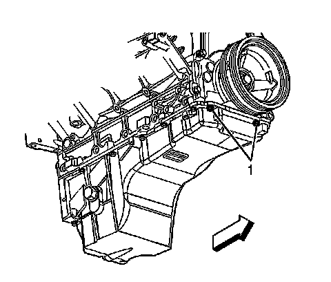
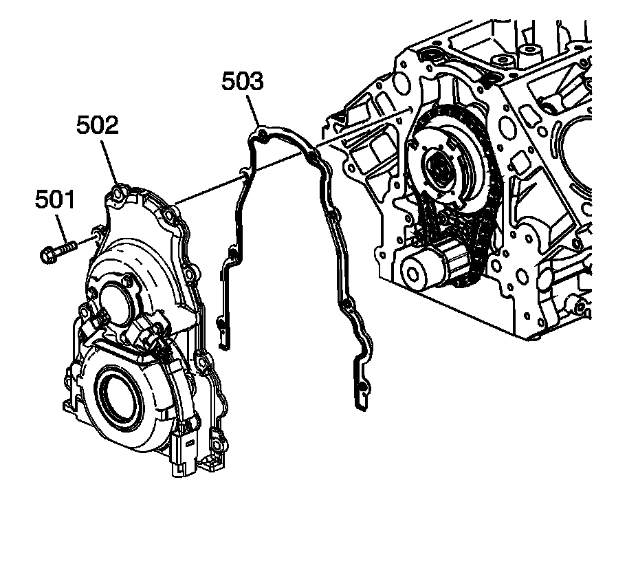

Timing Cover: Service and Repair
Engine Front Cover Replacement (RPOs LY6/L76/L92)
Tools Required
J 41476 Front and Rear Cover Alignment Tool
Removal Procedure

1. Remove the water pump.
2. Remove the crankshaft balancer.
3. Disconnect the engine harness electrical connector (1) from the camshaft position (CMP) sensor wire harness electrical connector.

4. Remove the oil pan-to-front cover bolts (1).

5. Remove the front cover bolts (501).
6. Remove the front cover (502) and gasket (503).
7. Discard the front cover gasket.
8. Remove the crankshaft front oil seal.

9. If replacing the engine front cover perform the following steps, otherwise proceed to step 10 of the installation procedure.
10. Remove the CMP sensor wire harness bolts (738).
11. Disconnect the CMP sensor wire harness from the CMP sensor.
12. Remove the CMP sensor wire harness (737).

13. Remove the CMP sensor (703).

14. Remove the CMP actuator magnet bolts (751), and magnet (752).
15. Remove and discard the CMP actuator magnet gasket (753).
Installation Procedure
Important:
^ Do not reuse the crankshaft oil seal or front cover gasket.
^ Do not apply any type of sealant to the front cover gasket, unless specified.
^ The special tool in this procedure is used to properly center the front crankshaft front oil seal.
- All gasket surfaces should be free of oil or other foreign material during assembly.
- The crankshaft front oil seal MUST be centered in relation to the crankshaft.
- An improperly aligned front cover may cause premature front oil seal wear and/or engine oil leaks.
1. If replacing the front cover perform the following steps, otherwise proceed to step 10.
2. Install a NEW CMP actuator magnet gasket (753) onto the magnet.
Notice: Refer to Fastener Notice.
3. Install the CMP actuator magnet (752) and bolts (751).
Tighten the bolts to 12 N.m (106 lb in).
4. Inspect the CMP sensor O-ring seal for cuts or damage. If the seal is not cut or damaged, it may be reused.
5. Lubricate the O-ring seal (704) with clean engine oil.
6. Install the CMP sensor (703).
7. Position the CMP sensor wire harness (737) to the front cover
8. Connect the CMP sensor wire harness to the CMP sensor.
9. Install the CMP sensor wire harness bolts (738).
Tighten the bolts to 12 N.m (106 lb in).
10. Apply a 5 mm (0.20 in) bead of sealant, 20 mm (0.80 in) long to the oil pan to engine block junction. Refer to Sealers, Adhesives, and Lubricants.
11. Position the NEW engine front cover gasket (503) and front cover (502) to the engine.
12. Install the front cover bolts (501) until snug. Do not overtighten.
13. Install the oil pan-to-front cover bolts (1) until snug. Do not over tighten.
14. Install J 41476 to the front cover.
15. Align the tapered legs of the J 41476 with the machined alignment surfaces on the front cover.
16. Install the crankshaft balancer bolt until snug. Do not overtighten.
1. Tighten the oil pan to front cover bolts to 25 N.m (18 lb ft).
2. Tighten the engine front cover bolts to 25 N.m (18 lb ft).
17. Remove the J 41476.
18. Connect the engine harness electrical connector (1) to the CMP sensor wire harness electrical connector.
19. Install a NEW crankshaft front oil seal.
20. Install the water pump.